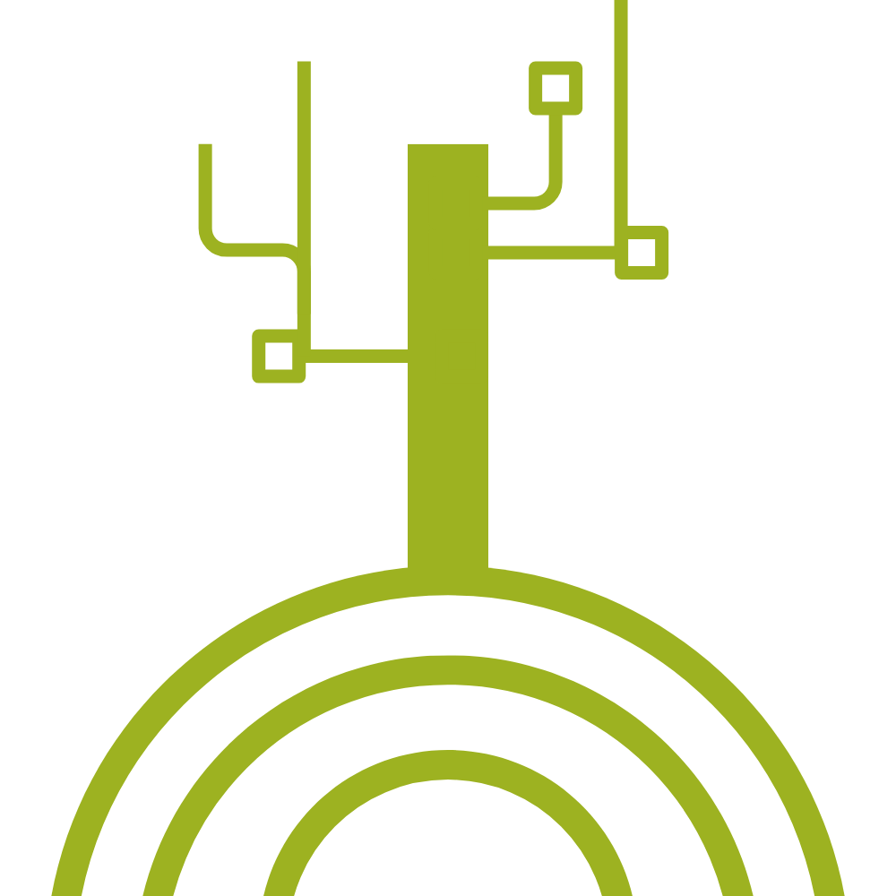

MAP-ROOVE
Ketahui lokasi dan titik mangrove di perairan Jakarta pada pemetaan mangrove disini!
Lokasi penelitian: Perairan Utara Daerah Khusus Jakarta Utara
Pemetaan Luasan Mangrove
Ketahui pemetaan mangrove tahun 2013-2024 disini!
Prediksi Luas Mangrove
Ketahui prediksi pemetaan luasan mangrove 6 tahun kedepan!